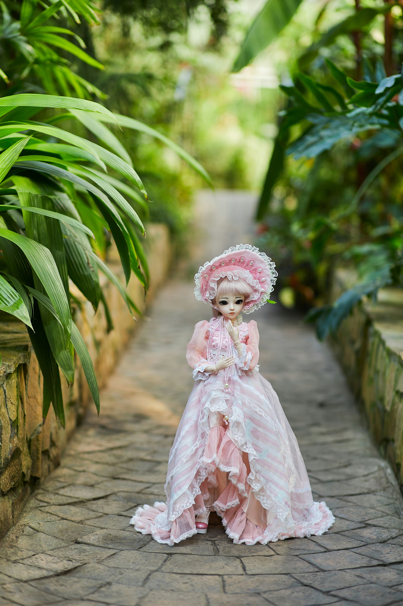
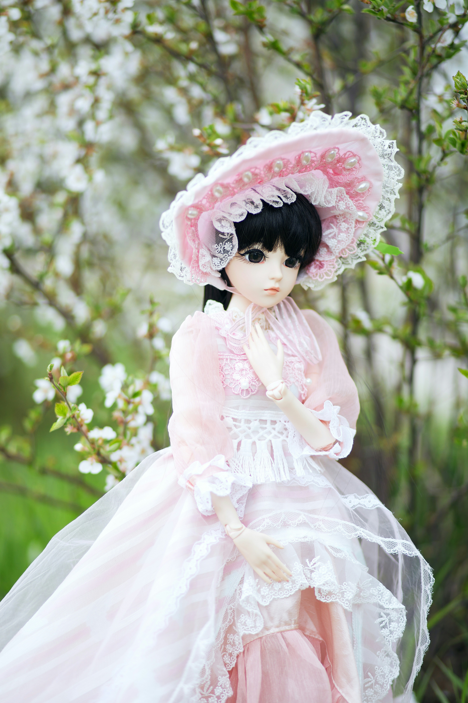

Classic Collectibles
Traditional dolls are appreciated for their craftsmanship, materials, and timeless designs.
A closer look at creativity, history, and collecting.
Collectible dolls come in many styles, from traditional porcelain figures to modern fashion dolls. Each one reflect a different era, artistic style, or personal interest.
Some collectors enjoy vintage dolls, while others prefer contemporary designs with detailed clothing and accessories. Exploring different styles is part of the fun, since you never know what you might like!.

Traditional dolls are appreciated for their craftsmanship, materials, and timeless designs.

Modern dolls celebrate fashion, imaginative styling, and a wide range of creative looks.
Dolls have been made for centuries from materials such as wood, cloth, porcelain, and plastic. Their designs often reveal something about the culture and technology of the time in which they were produced.
A few simple habits can help keep collectible dolls in good condition: